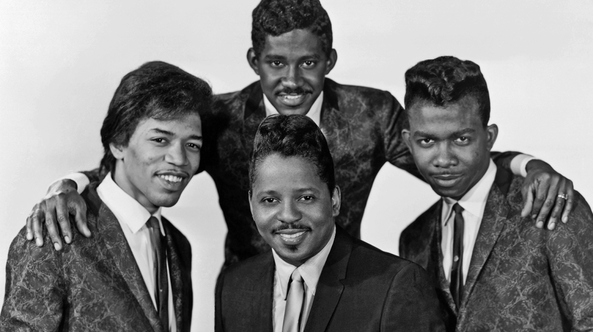
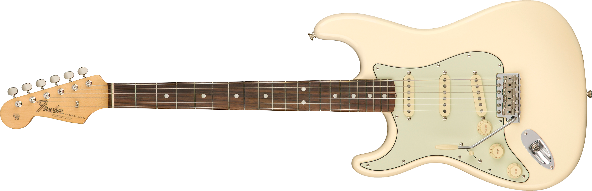

James, Marshall "Jimi" Hendrix wurde am 27.November 1942 in Seattle geboren. Sein Familie lebte in armen Verhätlnissen, beide Elternteile hatten Probleme mit Alkohol. Darum lebte Jimi als Junge oft bei Verwandten.
1957 bekam er seine erste akustische Gitarre, welche er danach scheinbar nie mehr ablegte.
1959 folgtte dann seine erste elektrische Gitarre eine weisse Surpro Ozark 1560s. Im selben Jahr verliess er vor seinem Abschluss die Highschool, um seine Musikkarriere weiter zu verfolgen.
Zwei Jahre später, 1961, stand er vor Gericht wegen Autodiebstahls. Der Richter gab ihm die Wahl zwischen zwei Jahre Gefängnis oder Beitritt in die Armee. Während seiner Zeit bei den Fallschirmjägern in der Army fiel er durch "Nichtsnutzigkeit" und Bessessenheit zu seiner Gitarre auf. 1962 wird er aus der Armee entlassen und begiebt sich nach Nashville, wo er mit seiner Band, den King Kasuals" auftritt.
Fortan arbeitet Hendrix als Session Musikant oder geht mit verschidensten Bands auf Tour. Unter anderen arbeitet er für BB King, Wilson Pickett und die Isley Brothers. Eine Single aus dieser Zeit:
1964 bekam Jimi die Chance in der Band von seinem Idol, little Richard zu spielen. Die beiden verstanded sich gut und Little Richard erkannte Jimis Talent.
Hendrix ist aber nur auf einer Single zu hören: "I aint now what you got, but it's got me". Ende 1965 wird er aus der Band gekickt, weil er zu oft zu spät war und Little Richard Konkurrenz auf der Bühne machte.

1966 spielte Hendrix mit "Curtis Knight and the Squires" und mit seiner eigenen Band "Jimmy James and the Blue Flames". Bei einem Auftritt in New York wird er dabei von Keith Richards Freundin Linda Keith entdeckt, welche im eine weisse Stratocaster schenkt. Dort wird er von Chas Chandler entdeckt und auf England eingeladen.
